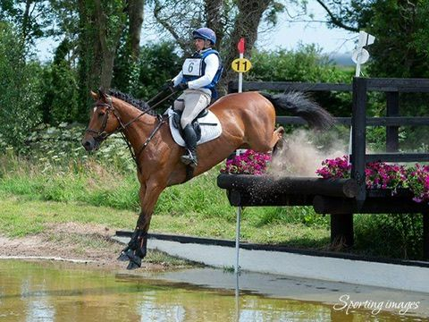
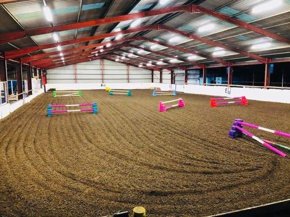
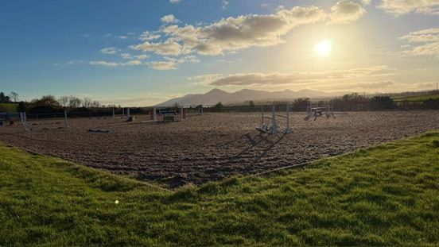
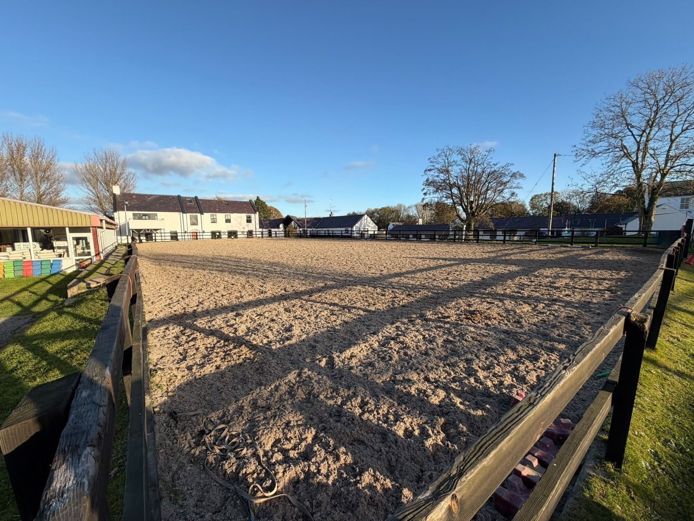

Facilities
Everything you need to learn, train and compete, with views across to the Mourne Mountains.
A mile and a half of cross-country
Our course has around 40 varied fences spread over a mile and a half of County Down countryside, including water. Built and maintained by our own team, it caters for every level, from introductory and Pony Club fences up to Eventing Ireland standard.
The course is available for schooling as well as competitions. Please call ahead to book.

International-size indoor arena
Whatever the Northern Irish weather brings, our international-size indoor arena means lessons, schooling, clinics and training can carry on all year round, with room for full show jumping courses.

Outdoor show-jumping arena
Set against a backdrop of the Mourne Mountains, our large outdoor facilities include a full show jumping course and our full cross-country course, both available for hire. They're ideal for schooling, clinics, club training and show preparation, and host the show jumping at our events.
Hire the courses
Second outdoor arena for schooling
In addition to our outdoor show-jumping arena, we have a second, fenced outdoor arena beside the yard buildings, providing a dedicated space for schooling in the open air.
Tullymurry has been run by the same family for three generations, giving it a friendly, welcoming feel. It is a BHS Approved Riding Centre, a Pony Club Linked Centre and a local base for Riding for the Disabled.

Facility hire
Our full show jumping and cross-country courses are available to hire, along with our international-size indoor arena, for schooling, clinics and club training.
Call us to check availability and book a slot.